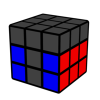

My 3x3 First & Second Block of Roux :)
First Block
The goal of First Block (FB) is to solve a 2x3x1 block on the left side of the cube as shown in the image below.
Notice that I used blue as the front layer.


Image from: https://cube.rider.biz/visualcube.php
Basic Pair Insertions
For you that are coming from CFOP, the pair insertion is similar to F2L, but with more flexibility to use the M, r/Rw, l/Lw moves. Here I show the basic insertions, which the other cases can be solved intuitively after we learn all of these basic insertions.
Image from: https://cube.rider.biz/visualcube.php
Second Block
The goal of Second Block (FB) is to solve a 2x3x1 block on the right side of the cube as shown in the image below.
Notice that I used blue as the front layer.

Image from: https://cube.rider.biz/visualcube.php
Basic Pair Insertions
For you that are coming from CFOP, the pair insertion is similar to F2L, but with more flexibility to use the M, r/Rw, l/Lw moves. Here I show the basic insertions, which the other cases can be solved intuitively after we learn all of these basic insertions.
Image from: https://cube.rider.biz/visualcube.php